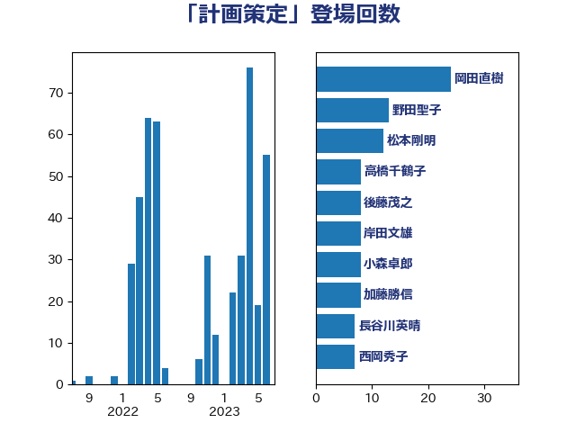

単語「計画策定」

| 坂本哲志 | 自由民主党 | 18 回 |
| 小泉進次郎 | 自由民主党 | 13 回 |
| 西田実仁 | 公明党 | 13 回 |
| 野田聖子 | 自由民主党 | 13 回 |
| 三ッ林裕巳 | 自由民主党 | 8 回 |
| 小森卓郎 | 自由民主党 | 8 回 |
| 後藤茂之 | 自由民主党 | 8 回 |
| 田村貴昭 | 日本共産党 | 7 回 |
| 田村憲久 | 自由民主党 | 6 回 |
| 西岡秀子 | 国民民主党 | 6 回 |
| 高橋千鶴子 | 日本共産党 | 6 回 |
| 中曽根康隆 | 自由民主党 | 5 回 |
| 湯原俊二 | 立憲民主党 | 5 回 |
| 吉良よし子 | 日本共産党 | 4 回 |
| 堀井巌 | 自由民主党 | 4 回 |
| 柳ヶ瀬裕文 | 日本維新の会 | 4 回 |
| 矢倉克夫 | 公明党 | 4 回 |
| 石井正弘 | 自由民主党 | 4 回 |
| 竹内真二 | 公明党 | 4 回 |
| 萩生田光一 | 自由民主党 | 4 回 |
| 阿部司 | 日本維新の会 | 4 回 |
| 嘉田由紀子 | 無所属 | 3 回 |
| 小山展弘 | 立憲民主党 | 3 回 |
| 尾崎正直 | 自由民主党 | 3 回 |
| 山口壯 | 自由民主党 | 3 回 |
| 岸真紀子 | 立憲民主党 | 3 回 |
| 斉藤鉄夫 | 公明党 | 3 回 |
| 松沢成文 | 日本維新の会 | 3 回 |
| 片山大介 | 日本維新の会 | 3 回 |
| 田名部匡代 | 立憲民主党 | 3 回 |
| たがや亮 | れいわ新選組 | 2 回 |
| 中島克仁 | 立憲民主党 | 2 回 |
| 伊波洋一 | 無所属 | 2 回 |
| 安江伸夫 | 公明党 | 2 回 |
| 宮路拓馬 | 自由民主党 | 2 回 |
| 山添拓 | 日本共産党 | 2 回 |
| 岸田文雄 | 自由民主党 | 2 回 |
| 徳永エリ | 立憲民主党 | 2 回 |
| 打越さく良 | 立憲民主党 | 2 回 |
| 梶山弘志 | 自由民主党 | 2 回 |
| 田畑裕明 | 自由民主党 | 2 回 |
| 舩後靖彦 | れいわ新選組 | 2 回 |
| 菅義偉 | 自由民主党 | 2 回 |
| 西銘恒三郎 | 自由民主党 | 2 回 |
| 角田秀穂 | 公明党 | 2 回 |
| 金子恭之 | 自由民主党 | 2 回 |
| 長浜博行 | 無所属 | 2 回 |
| 上川陽子 | 自由民主党 | 1 回 |
| 中川康洋 | 公明党 | 1 回 |
| 中村裕之 | 自由民主党 | 1 回 |
| 井上信治 | 自由民主党 | 1 回 |
| 井上英孝 | 日本維新の会 | 1 回 |
| 住吉寛紀 | 日本維新の会 | 1 回 |
| 佐藤啓 | 自由民主党 | 1 回 |
| 倉林明子 | 日本共産党 | 1 回 |
| 北村経夫 | 自由民主党 | 1 回 |
| 吉川ゆうみ | 自由民主党 | 1 回 |
| 吉川赳 | 無所属 | 1 回 |
| 吉田久美子 | 公明党 | 1 回 |
| 堀内詔子 | 自由民主党 | 1 回 |
| 大口善徳 | 公明党 | 1 回 |
| 大島敦 | 立憲民主党 | 1 回 |
| 小宮山泰子 | 立憲民主党 | 1 回 |
| 小林鷹之 | 自由民主党 | 1 回 |
| 小沼巧 | 立憲民主党 | 1 回 |
| 山下芳生 | 日本共産党 | 1 回 |
| 山口那津男 | 公明党 | 1 回 |
| 山崎誠 | 立憲民主党 | 1 回 |
| 岩渕友 | 日本共産党 | 1 回 |
| 岩田和親 | 自由民主党 | 1 回 |
| 川田龍平 | 立憲民主党 | 1 回 |
| 平木大作 | 公明党 | 1 回 |
| 庄子賢一 | 公明党 | 1 回 |
| 新妻秀規 | 公明党 | 1 回 |
| 枝野幸男 | 立憲民主党 | 1 回 |
| 柚木道義 | 立憲民主党 | 1 回 |
| 柿沢未途 | 無所属 | 1 回 |
| 梅村みずほ | 日本維新の会 | 1 回 |
| 梅村聡 | 日本維新の会 | 1 回 |
| 横沢高徳 | 立憲民主党 | 1 回 |
| 橋本聖子 | 無所属 | 1 回 |
| 武田良太 | 自由民主党 | 1 回 |
| 浜口誠 | 国民民主党 | 1 回 |
| 清水真人 | 自由民主党 | 1 回 |
| 清水貴之 | 日本維新の会 | 1 回 |
| 渡辺創 | 立憲民主党 | 1 回 |
| 田中健 | 国民民主党 | 1 回 |
| 田村智子 | 日本共産党 | 1 回 |
| 神谷裕 | 立憲民主党 | 1 回 |
| 笹川博義 | 自由民主党 | 1 回 |
| 細田健一 | 自由民主党 | 1 回 |
| 美延映夫 | 日本維新の会 | 1 回 |
| 自見はなこ | 自由民主党 | 1 回 |
| 舞立昇治 | 自由民主党 | 1 回 |
| 菊田真紀子 | 立憲民主党 | 1 回 |
| 西村康稔 | 自由民主党 | 1 回 |
| 赤澤亮正 | 自由民主党 | 1 回 |
| 足立敏之 | 自由民主党 | 1 回 |
| 馬場成志 | 自由民主党 | 1 回 |